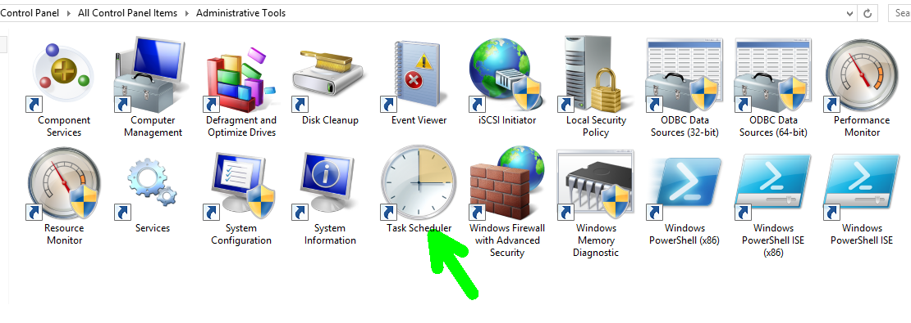
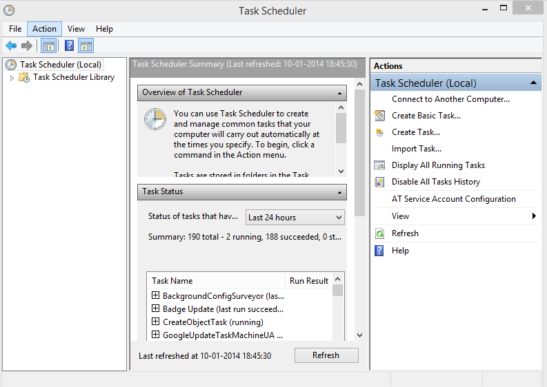
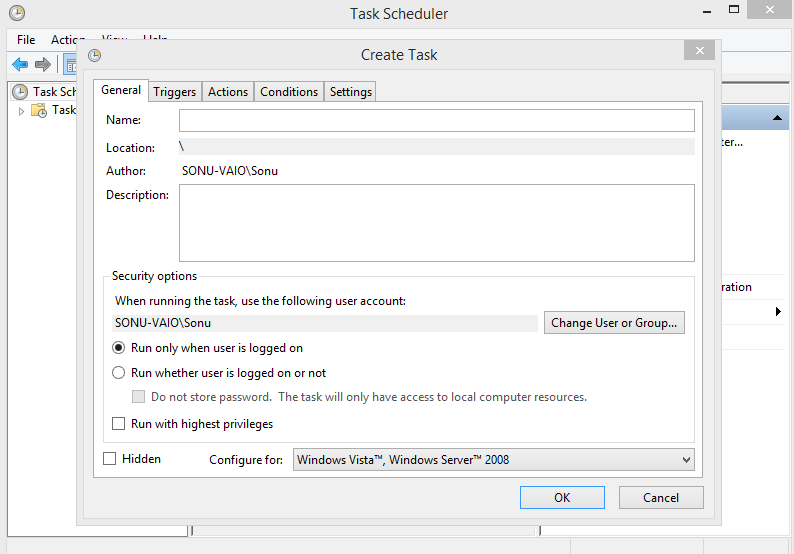
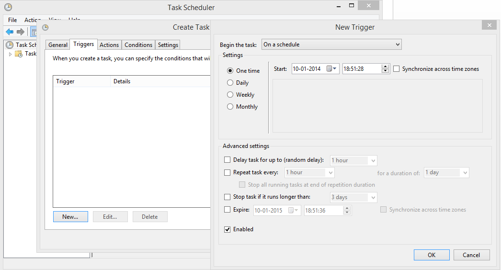
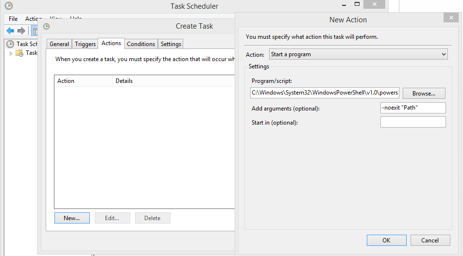
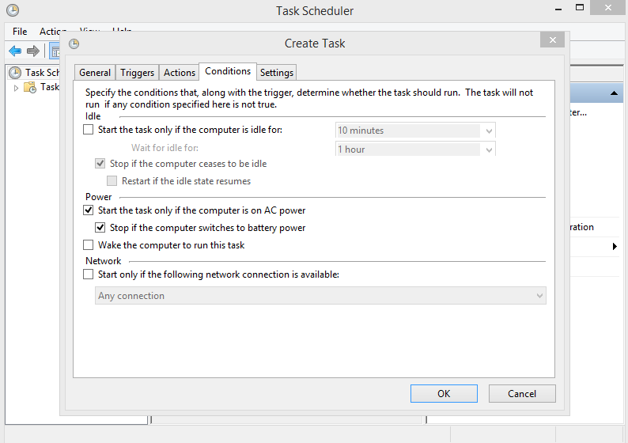
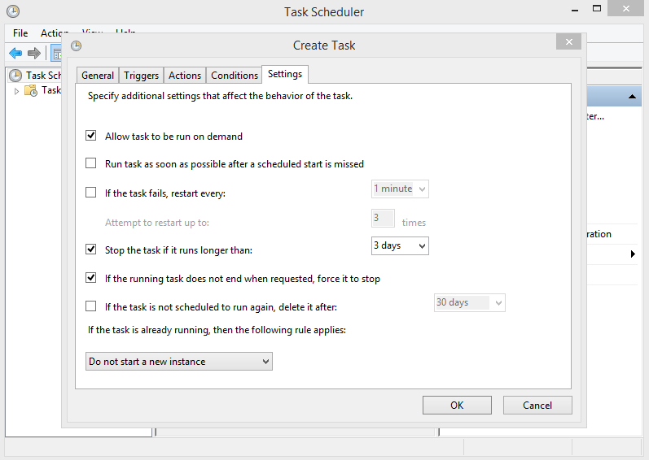
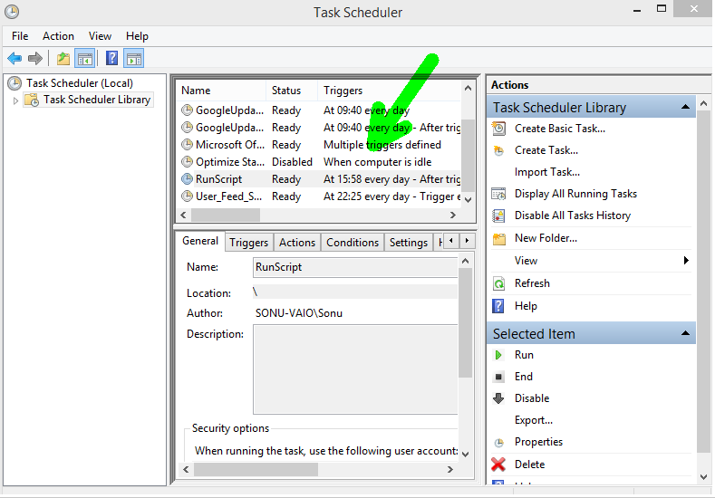
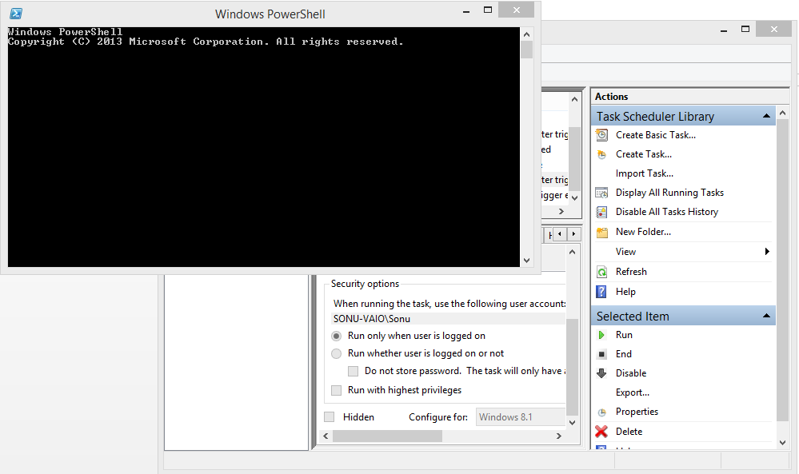

Blog
Task Scheduler with PowerShell Scripts
The Task Scheduler enables you to automatically perform routine tasks on a chosen computer. The Task Scheduler does this by monitoring whatever criteria you choose to initiate the tasks (referred to as triggers) and then executing the tasks when the criteria is met.
Applies To
| • A specific system event occurs. • At a specific time. • At a specific time on a daily schedule. • At a specific time on a weekly schedule. • At a specific time on a monthly schedule. • At a specific time on a monthly day-of-week schedule. • When the computer enters an idle state. • When the task is registered • When the system is booted. • When a user logs on. • When a Terminal Server session changes state. |
Here is an Example to add a task in Task Scheduler

Control Panel >> Administrative Tools >> Task Scheduler
That will open up an interface of Task Scheduler
Here's How A Task Scheduler interface looks like.You can see various option for Tasks: Create, Log, Import & a Task status Panel.
Click Create Task On The Top Right Corner of Interface.
General
| Fields | Description |
| Name | Type Name of Task (User Defined) |
| Location | Location of Task to be created (System Defined ie. Not Editable) |
| Author | Current User Logged IN |
| Description | OPTIONAL: Scripts Description |
| Security Options | |
| Account | Defines when running the scripts, user should be logged on or not. |
| Privilege | Option to Run your script with highest privilege to other application. |
| Configure For | Operating Systems & Version |
Now Lets Move to Next Tab which is Triggers
Click New
Add / Edit Trigger Event i.e. When should task scheduler should run your script or program.
| Fields | Description |
| Begin the Task | When should the task be triggerd (OPTIONS) |
| Setting | |
| One Time | When sould it start. |
| Daily | Everyday on defined time. |
| Weekly | Event Time Defined (User) |
| Monthly | Monthly on defined time. |
| Advanced Setting | |
| Repetition of Tasks | Hourly and 5 mins for Minimum time |
| Stop Task | Duration |
| Enable | Should Trigger be Enabled(CheckBox) |
Action
An Action is part of task scheduler in which the specified program is executed and arguments are passed to execute scripts.
Action of a New Task
Actions Tab Represents Which Program to run and with what arguments.
Pass Executable Application in Program/Script
Conditions
Condition Tabs Will Ask you about what should action do when some environments change.
Condition TabAny Specified condition in which the task sould not run. E.g. AC Power, Idle State etc.
Three Conditions
1. Idle
2. Power
3. Network
Settings
Specify Addition setting that affect the behaviour of the task.
Setting Tab Rules to be applied on the task being created.
Click OK to create task and go back to previous menu.
Execution
We can run the task manually. Select the Task from the panel and click run. The Task will run as defined in the script and arguments.

Performing ExecutionNow Get Started Create your own Scheduled Task